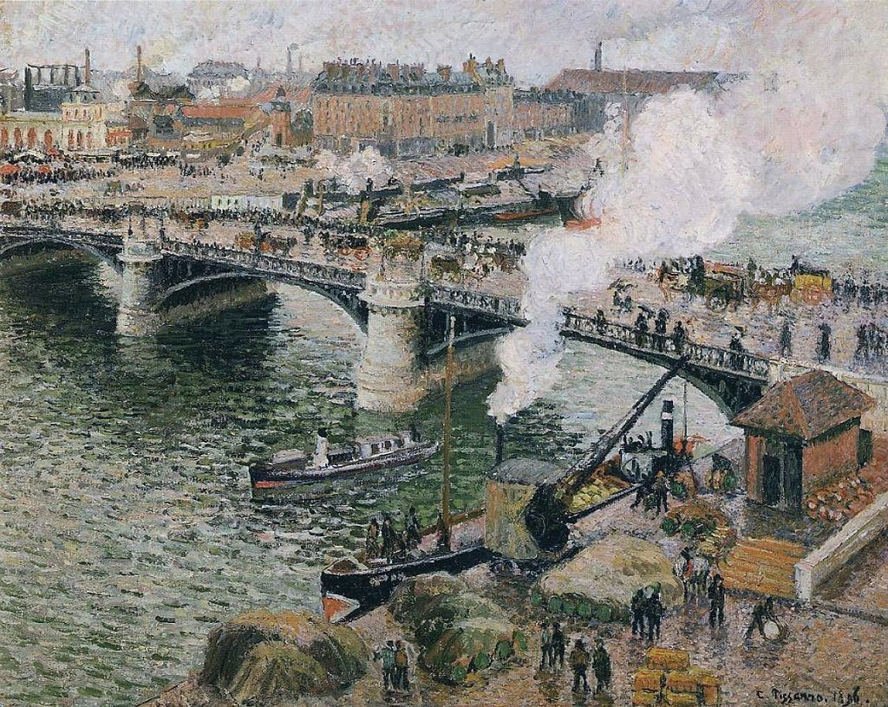

<head>
<meta charset="UTF-8" />
<meta name="keywords" content="drawing, painting" />
<meta name="description" content="drawings by Sunjy" />
<title>Sunjy</title>
<link rel="shortcut icon" type="image/x-icon" href="../../mImages/mCommon/favicon.ico" media="screen" />
<link rel="stylesheet" type="text/css" href="../../mCsses/mCommon/mCssA.css" />
<link rel="stylesheet" type="text/css" href="../../mCsses/mCommon/mCssB.css" />
<link rel="stylesheet" type="text/css" href="../../mCsses/mCommon/mCssC.css" />
<link rel="stylesheet" type="text/css" href="../../mCsses/mCommon/mCssD.css" />
<link rel="stylesheet" type="text/css" href="../../mCsses/mContent/mCssA.css" />
<link rel="stylesheet" type="text/css" href="../../mCsses/mContent/mCssB.css" />
<link rel="stylesheet" type="text/css" href="../../mCsses/mContent/mCssC.css" />
<link rel="stylesheet" type="text/css" href="../../mCsses/mContent/mCssD.css" />
</head>
<script type="text/javascript" src="../../mScripts/mContent/mContentAA.js" /></script>
<script type="text/javascript" src="../../mScripts/mContent/mContentAB.js" /></script>
<script type="text/javascript" src="../../mScripts/mContent/mContentAC.js" /></script>
<script type="text/javascript" src="../../mScripts/mContent/mContentAD.js" /></script>
<script type="text/javascript"></script> 
<script type="text/javascript">
document.write('<div class="mImgAbsolute"></div>');
/*
document.write('<p class="mFontSizeBColor" />From a white paper...</p>');
document.write('<table class="center"><tr><td>');
document.write('');
document.write('</td></tr></table>');
*/
</script>


<script type="text/javascript">
document.write('<p class="mFontSizeBColor" />Pont Boieldieu in Rouen, Rainy Weather</p>');
document.write('<p class="mFontSizeSColor" />“Pont Boieldieu in Rouen, Rainy Weather” by Camille Pissarro depicts the iron bridge and across the river are the Gare d’Orléans train station and the Place Carnot square. His Rouen series focuses on the bustle of the modern city.<br><br>The Rouen pictures are a return to Impressionism after a decade of experimenting with Post-Impressionism and Pointillism.<br><br>Pissarro deliberately sought out a view of the busy industrial section of the town and produced several paintings of the view from the hotel in different light conditions and different weather.<br><br>He was attracted to Rouen, describing it as having a unique character with its juxtaposition of old and new, which is part of what makes Pissarro’s urban paintings so interesting.<br><br>On his first 1896 trip, he stayed at the Hôtel de Paris in Rouen, and his room overlooked the Seine, and it is from this vantage point that this painting was created.<br></p>');
document.write('<table class="center" /><tr><td>');
document.write('<br>The Rouen pictures are a return to Impressionism after a decade of experimenting with Post-Impressionism and Pointillism.<br><br>Pissarro deliberately sought out a view of the busy industrial section of the town and produced several paintings of the view from the hotel in different light conditions and different weather.<br><br>He was attracted to Rouen, describing it as having a unique character with its juxtaposition of old and new, which is part of what makes Pissarro’s urban paintings so interesting.<br><br>On his first 1896 trip, he stayed at the Hôtel de Paris in Rouen, and his room overlooked the Seine, and it is from this vantage point that this painting was created.<br>" />');
document.write('</td></tr></table>');
</script>


